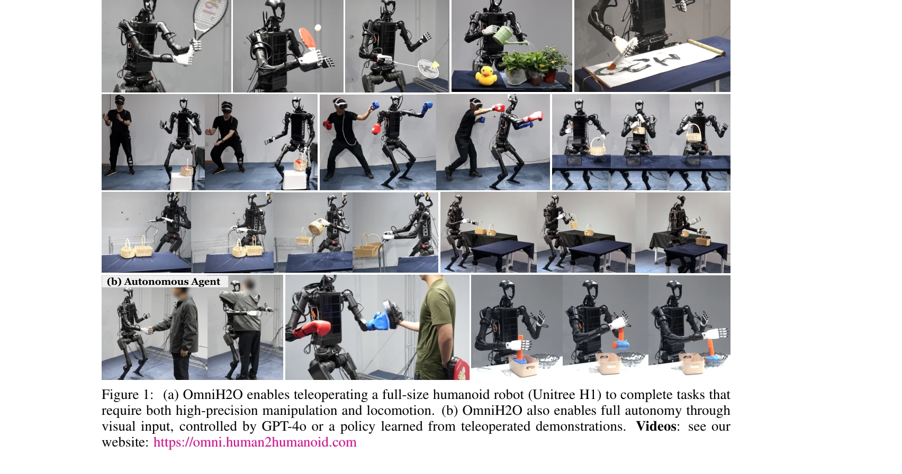
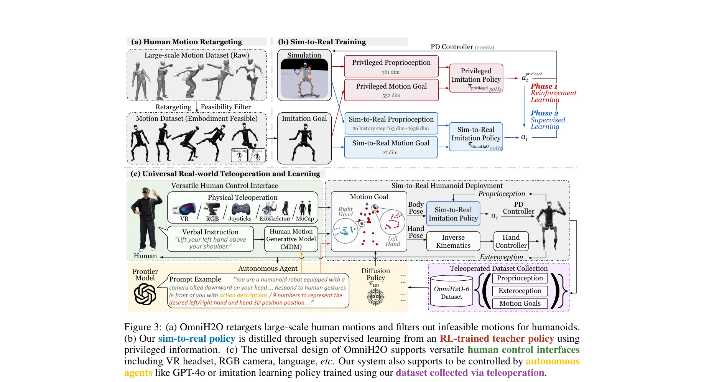

저자: Tairan He, Zhengyi Luo, Xialin He, Wenli Xiao, Chong Zhang, Weinan Zhang, Kris Kitani, Changliu Liu, Guanya Shi | 날짜: 2024-06-13 | URL: https://arxiv.org/abs/2406.08858

Figure 1: (a) OmniH2O enables teleoperating a full-size humanoid robot (Unitree H1) to complete tasks that
OmniH2O는 kinematic pose를 보편적 제어 인터페이스로 사용하여 VR, RGB 카메라, 음성 명령 등 다양한 입력을 통해 전신 인형 로봇을 조작하고 자율 작업을 수행할 수 있는 학습 기반 시스템이다.

Figure 3: (a) OmniH2O retargets large-scale human motions and filters out infeasible motions for humanoids.
Figure 3: (a) OmniH2O retargets large-scale human motions and filters out infeasible motions for humanoids.
총평: OmniH2O는 kinematic pose 기반의 보편적 제어 인터페이스와 정교한 sim-to-real 파이프라인을 통해 인형 로봇의 전신 로코-조작을 처음으로 체계적으로 해결한 연구이며, 공개 데이터셋과 다양한 실제 작업 시연으로 높은 실무 가치를 제공한다.